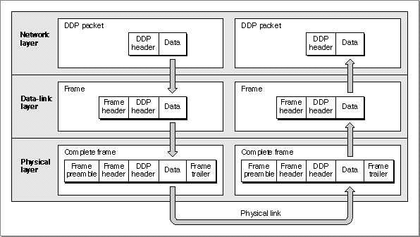

Legacy Document
Important: The information in this document is obsolete and should not be used for new development.
Important: The information in this document is obsolete and should not be used for new development.


AppleTalk Networking
This section introduces some networking concepts and terms that pertain to AppleTalk and that are used throughout the chapters of this book. It discusses
- fundamental networking concepts and AppleTalk
- addressing in AppleTalk
- AppleTalk connectivity
Basic AppleTalk Networking Concepts
A networking system, such as AppleTalk, consists of hardware and software. Hardware on an AppleTalk network includes physical devices such as Macintosh personal computer workstations, printers, and Macintosh computers acting as file servers, print servers, and routers; these devices are all referred to as nodes on the network.AppleTalk interconnects these nodes through transmission paths that include both software and hardware components. The software that governs the transfer of data across a computer network is commonly designed using a layered architecture or model. (For more information on networking models and AppleTalk, see "AppleTalk and the OSI Model" beginning on page 1-17.)
For each layer of a model, protocols exist that specify how the networking software
is to implement the functions which that layer provides and interact with the layer
above and below it. A protocol is a formalized set of procedural rules for the exchange
of information and the interactions between the network's interconnected nodes. A network software developer implements these rules in programs that carry out the functions specified by the protocol. AppleTalk consists of a number of protocols, many
of which are implemented in software programs called drivers.
There are many ways to characterize networks. One characteristic of a network is whether it is connection-oriented or connectionless. (A protocol can also be considered connectionless or connection-oriented.) A connection-oriented network is one in which two nodes on the network, such as computers, that want to communicate must go through a connection-establishment process, which is called a handshake. This involves the exchange of predetermined signals between the nodes in which each end identifies itself to the other. Once a connection is established, the communicating applications or processes on the nodes at either end can send and receive streams of data.
- Note
- This book uses the abbreviated term protocol to refer to the implementation of those rules in software drivers, instead of always using the complete term protocol implementation.

A connectionless network is one in which two nodes that want to communicate do so by going directly into a data-transfer state without first setting up a connection. A connectionless network is also called a datagram or packet-oriented network because data is sent as discrete packets; a packet is a small unit of data that is sent across a network. This means that each packet must carry the full addressing information required to deliver the data from its source node to its destination node. A packet includes a header portion that holds the addressing information along with some other information, such as a checksum value that can be used to verify the integrity of the data delivered, and a data portion that holds the message text. The terms packet and datagram are synonymous.
A connection-oriented network is analogous to a telephone system. The party who initiates the call knows whether or not the connection is made because someone at
the other end of the line either answers or not. A connectionless network is analogous
to electronic mail. A person sends a mail message expecting it will be delivered to its destination. Although the mail usually arrives safely, the sender doesn't know this unless the recipient initiates a response affirming it.There are trade-offs between the two types of networks: a connection-oriented network provides more function, but at a cost. A connectionless network is less costly in terms of overhead, but it offers limited support.
A connection-oriented network ensures reliable delivery of data, which includes error checking and recovery from error or packet loss. Connection-oriented networks provide support for sessions. In AppleTalk networking, a session is a logical (as opposed to physical) connection between two entities on an internet. The two communicating parties can send streams of data across a session, rather than being limited to sending the data as individual packets. When data is sent as a stream, the networking system provides flow control to manage the data that makes up the stream. A session must be set up at the beginning and broken down at the end. All of these services entail overhead.
There is no connection setup or breakdown required for a connectionless network, and no session is established. A connectionless network offers best-effort delivery only. Best-effort delivery means that the network attempts to deliver any packets that meet certain requirements, such as containing a valid destination address, but the network does not inform the sender when it is unable to deliver the packet, nor does it attempt to recover from error conditions and packet loss. A connectionless network involves less overhead because it does not provide network-wide acknowledgments, flow control, or error recovery.
The terms connectionless and connection-oriented can also be applied to individual protocols that make up the networking software, as well as to the entire network system itself. AppleTalk includes protocols that provide connection-oriented services, although, as a whole, AppleTalk is considered a connectionless network because data is delivered across an AppleTalk network or internet as discrete packets. One of the AppleTalk protocols, the Datagram Delivery Protocol (DDP), implements packet delivery. However, the AppleTalk Data Stream Protocol (ADSP) and the AppleTalk Transaction Protocol (ATP) provide connection-oriented services, such as session establishment and reliable delivery of data. The AppleTalk protocols that provide connection-oriented services are built on top of the datagram services that DDP provides.
In developing AppleTalk applications, you must decide whether to use a connection-
oriented or connectionless AppleTalk protocol. How to choose a protocol to use is described in "Deciding Which AppleTalk Protocol to Use" beginning on page 1-19.The connection-oriented AppleTalk protocols support the following two kinds of sessions:
When both ends can send and receive data, the process is called a full-duplex
- symmetrical. This session is also referred to as a peer-to-peer session. It is one in which both ends have equal control over the communication. Both ends can send and receive data at the same time and initiate or terminate the session. This type of session offers more capability and is more commonly used than an asymmetrical session.
- asymmetrical. In this type of session, only one end of the connection can control the communication. One end of the connection makes a request to which the other end can only respond. This type of session is best suited to a transaction in which a small amount of data is transferred from one side to the other.
dialog. When both sides must alternate between sending and receiving data,
the process is called a half-duplex dialog.Addressing and Data Delivery on AppleTalk Networks
This section discusses some of the aspects of AppleTalk networking that are part of its addressing and data-delivery scheme. Many components contribute to the addressing information that is used to identify the location of an application or a process on an AppleTalk internet. This section defines these names and numbers, and Table 1-1 highlights them.A single AppleTalk network can be interconnected with other AppleTalk networks through routers to create a large, dispersed AppleTalk internet. A router in an internet can select the most efficient path to the data's intended destination, while allowing connected networks to remain fully independent and to retain separate addresses.
Each network is assigned a network number so that packets destined for a particular network on an AppleTalk internet can be routed to the correct network. A router consults the packet's destination network number and forwards the packet throughout the internet from one router to another until the packet arrives at its destination network. AppleTalk supports a number of types of networks including LocalTalk, TokenTalk, EtherTalk, and FDDITalk networks.
AppleTalk assigns a node ID to a node when it connects to the network. Every node on an AppleTalk network is identified by its unique 8-bit node ID. (Extended networks include the 16-bit network number.) Once a packet arrives at its destination network, the packet is delivered to its destination node within that network, based on the node ID.
More than one application or process that uses AppleTalk may be running on a single node at the same time. Because of this, AppleTalk must have a way to determine for which application or process a packet that is delivered to the node is intended. AppleTalk uses sockets to satisfy this requirement. A socket is a piece of software that serves as
an addressable entity on a node. Each process or application that runs on an AppleTalk network "plugs into" a socket that is identified by a unique number. Applications or processes exchange data with each other across an internet through sockets. Because
each application or process has its own socket address, a node can have two or more concurrent open connections, for example, one to a file server and one to a printer.The socket number identifies the process to which the Datagram Delivery Protocol (DDP) is to deliver a packet. The combination of the socket number, the node ID, and
the network number creates the internet socket address of an application or process.
An internet socket address provides a unique identifier for any socket in the AppleTalk internet. When an application or process is associated with a socket, it is referred to
as a socket client.An application or process becomes accessible from any point in the AppleTalk internet through its association with an internet socket address and a special name that is associated with the internet socket address through the AppleTalk Name-Binding Protocol (NBP). An NBP name contains three parts: object, type, and zone. The zone field of the name is the zone in which the node resides.
A zone is a logical grouping of nodes in an AppleTalk internet. The use of zones allows
a network administrator to set up departmental or other logical groupings of nodes on an internet. A single extended network can contain nodes belonging to any number of zones; an individual node on an extended network can belong to only one zone. Each zone is identified by a zone name.An AppleTalk internet always consists of more than one AppleTalk network. It can be made up of a mix of LocalTalk networks, TokenTalk networks, EtherTalk networks, and FDDITalk networks. It can also consist of more than one network of a single type, such as several LocalTalk networks. A single AppleTalk network can be either a nonextended network or an extended network. An AppleTalk internet can include both nonextended and extended networks.
An AppleTalk nonextended network is one in which
- Note
- The term internet is used throughout this book to refer to an AppleTalk internet exclusively. It is not within the scope of this book to discuss other types of internets, such as Arpanet.
LocalTalk is an example of a nonextended network. Each node on a nonextended net-
- the network has one network number assigned to it
- the network supports only one zone
- all nodes on the network share the same network number and zone name
- each node on the network has a unique node ID
work, such as LocalTalk, has a unique 8-bit node ID. Because there are 256 combinations of 8 bits, and two combinations are not available (ID 255 is reserved for broadcast messages and the ID 0 is not allowed), a nonextended network supports up to only
254 active nodes at a time.An AppleTalk extended network is one in which
A network number range defines the extended network. An extended network uses what is referred to as extended addressing: in principle, a range of network numbers allows each extended network to have over 16 million (224) nodes. In any specific implementation, the hardware or software might limit the network to fewer nodes.
- the network has a range of network numbers assigned to it
- the network supports multiple zones
- each node on the network has a unique node ID (Nodes can also have different network numbers that fall within the network number range and different
zone names.)
You can think of an extended network as a number of nonextended networks forming a single network, each providing up to 254 possible node IDs.
Whether the network is extended or nonextended, data is always delivered in DDP packets that include the DDP header that contains addressing information followed by the data itself. As the DDP packet is passed down the protocol stack to the layer below, the packet is extended to include additional information.
At the data-link layer, additional addressing information is prepended to the DDP header, and the packet is now called a frame. At the physical layer, a frame preamble is prepended to the frame header and a frame trailer is appended to the end of the data portion of the DDP packet. (You don't need to be concerned with the frame preamble and frame trailer; they are mentioned here and shown in Figure 1-1 for completeness.) The frame is then transmitted across the network or internet to its destination node.
At the destination node, the frame is received, and as it is passed up through the protocol stack the additional information that was added to the DDP packet at each layer on the sending node is used and removed at the corresponding layer on the destination node. The frame preamble and frame trailer are removed at the physical layer. The frame header is removed at the data-link layer. You can think of the data that your application sends as being enclosed successively at each of these layers in envelopes that contain addressing information necessary to deliver the data; at the corresponding layer on the destination node, the envelope is removed. Figure 1-1 illustrates this concept.
Figure 1-1 Data delivery on AppleTalk networks

AppleTalk Connectivity
A fundamental part of a network system is its connectivity infrastructure, which includes the communication hardware and the protocols for controlling the hardware. The communication hardware can consist of various media including wire cabling, fiber optics cabling, and a network interface controller (NIC), if one is used. This hardware and software constitute the data transmission medium, which is called a data link. A
data link provides nodes with access to the network.Nodes on a network share and compete for access to the link. The link-access protocol implemented in the software controls the access of a node to the network hardware and makes it possible for many nodes to share the same communications hardware. It also handles the delivery of packets from one node to another over a network. When a packet is delivered to the link-access protocol for transmission across the network, additional addressing and control information is added to the packet, and the packet is called
a frame.AppleTalk connectivity is designed to be link independent, which means that it allows for the use of various types of data links accessed through the various link-access protocols, which it supports. AppleTalk provides the following data-link support:
These protocols provide interfaces between the Datagram Delivery Protocol (DDP) and the types of data-link hardware that AppleTalk can use. A user can choose to connect to any of the data links that the node is set up to support.
- The LocalTalk Link-Access Protocol (LLAP) supports a LocalTalk link.
- The EtherTalk Link-Access Protocol (ELAP) supports an Ethernet link.
- The TokenTalk Link-Access Protocol (TLAP) supports a token ring link.
- The Fiber Distributed Data Interface Link-Access Protocol (FLAP) supports a Fiber Distributed Data Interface link.
AppleTalk includes a component called the Link-Access Protocol (LAP) Manager, which insulates the higher-level AppleTalk protocols from having to identify and connect to the link that the user has chosen; the LAP Manager connects to the selected link for them.